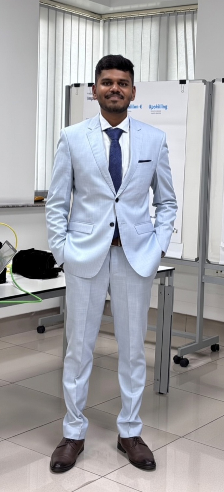

12+
Critical & high-severity findings taken through remediation at Festo.
Senior Offensive Security & Product Security Engineer

Dhanesh Sivasamy
I have 4.5 years of experience assessing web, API, mobile, thick-client, firmware, and industrial systems across banking, media, and industrial automation. I combine reverse engineering, source review, and fuzzing with custom tooling and work with engineers to remediate findings. I currently assess banking applications and AI platforms in the UAE.
Dubai, UAE | From India
dhanesh.professional@gmail.com · +971 52 793 9507 · https://0xdhanesh.github.io · https://www.linkedin.com/in/dhanesh-sivasamy
Critical & high-severity findings taken through remediation at Festo.
Of repetitive assessment workflows automated at Aujas.
Product Security team growth supported through hiring and mentoring.
01 / Selected work
iOS device integrity · Swift, C, Python
Built a toolkit to detect jailbreaks, Frida, and debuggers. It cross-checks raw system calls against libc and compares independent dyld image views. Reports use App Attest and a Secure Enclave signature, verified by a reference Python server. Testing on physical devices documented detection misses.
Memory safety labs · C, C++, Docker
Built 15 labs covering stack, global, and heap overflows and Windows SEH overwrite. Each includes a vulnerable program, a fixed version, and a guide. The Docker build harness cross-compiles for six targets with standard and hardened profiles.
Linux investigations · Python, FastAPI, BCC/eBPF
Built a process and network monitor that records process lineage, network connections, loaded libraries, and call-site stacks in a local SQLite evidence store. It can fall back to polling /proc when eBPF is unavailable.
Threat modeling · Browser, CLI, MCP
Built a dependency-free offline tool compatible with Microsoft Threat Modeling Tool templates. Its MCP server lets AI agents build models from source code, and the tool supports evidence-based signal scoring and report export.
AI security · Research / proof of concept
Attacker-controlled logs can become instructions when an LLM processes them later. I explored this indirect trust boundary through IPI-SOC-LLM, with an attack chain, mitigations, and detection notes.
Application security · Open-source tooling
Built burpsuite-swagger-generator, a Burp Suite plugin that turns observed API traffic into Swagger / OpenAPI specifications to support testing and fuzzing when documentation is unavailable.
Application security tooling · Kotlin
Built an MCP server that connects AI clients to Burp Suite Repeater, Collaborator, and proxy history.
Vulnerability research · CVE-2022-2912
Credited as the discoverer of CVE-2022-2912, a cross-site request forgery issue that leads to server-side request forgery in the Craw Data WordPress plugin through version 1.0.0 (CVSS 4.3).
Listed in Oracle's Security Acknowledgements Hall of Fame for a separate disclosure.
02 / Experience
Most client work is confidential. These records describe the scope, approach, and outcomes I can share publicly.
Senior Engineer – Cyber Security · Jul 2026 – Present · Dubai, UAE · Client: Emirates NBD
Senior Test Engineer – Security Testing (Product Security) · Mar 2025 – May 2026 · Bengaluru, India
Senior Consultant · Jun 2022 – Mar 2025 · Bengaluru, India · Client: Sony India
Security Analyst Intern · Jul 2021 – Nov 2021 · Chennai, India
03 / Expertise
Web, API, Android, iOS, and Windows and macOS thick-client testing. Authentication, authorization, business-logic flaws, red teaming, and RASP assessment.
Tools · Burp Suite, Frida, MobSF.
Binary analysis, disassembly, decompilation, debugging, memory corruption, vulnerability research, and exploit development.
Tools · AFL++, Radamsa, custom fuzzers, Ghidra, IDA Pro, GDB, LLDB.
Embedded Linux firmware analysis, IoT and hardware assessment, Modbus and PROFINET fuzzing, and TARA aligned with IEC 62443 and the EU Cyber Resilience Act.
Tools · Logic analyzers, ChipWhisperer, binwalk, Scapy, Wireshark, Nmap.
Direct, indirect, and second-order prompt injection, guardrail bypass, agent and tool abuse, Model Context Protocol (MCP) security, and OWASP LLM Top 10.
Source-code review, SAST/DAST, CI/CD security testing, STRIDE threat modeling, assessment automation, remediation, and custom tooling.
Languages · Python, C, C++, Swift, Kotlin, Java, JavaScript, Bash, PowerShell, x86 and ARM assembly (analysis).
Tools · Fortify, Semgrep, Docker, Git.
CBUAE, DFSA, PCI DSS, UAE IA Standards, ISO 27001, OWASP Top 10, OWASP API Security Top 10, MITRE ATT&CK, HIPAA, and Radio Equipment Directive.
04 / Credentials
B.E. Computer Science and Engineering
Anna University Regional Campus Coimbatore · Jun 2019 – Nov 2022
CGPA: 8.57 / 10
Diploma in Electrical and Electronic Engineering
PSG College of Technology · Jun 2016 – Jun 2019
CGPA: 7.8 / 10
05 / Teaching & writing
I teach the methods behind the findings, from hands-on investigation to actionable fixes.
I also write about fuzzing harnesses, firmware reversing, testing beyond scanners, and prompt injection in practice.
06 / About
I'm from India and now work in Dubai. My path started in electrical and electronic engineering before moving into computer science and offensive security. That hardware foundation shapes how I investigate software: follow the data, question the assumptions, and look across the boundaries between systems.
I believe a finding is useful when engineering can act on it. I focus on clear reproduction steps, practical fixes, and communication that works for both developers and leadership. Teaching and open-source tools help that knowledge travel beyond one person.
Outside production systems, I explore technical subjects I don't yet understand. I've completed HackTheBox Rasta Labs. Fuzzing harnesses and second-order injections are reliable ways to start a long conversation over coffee.
LET’S CONNECT
Discuss a role, a research question, or a difficult security problem.